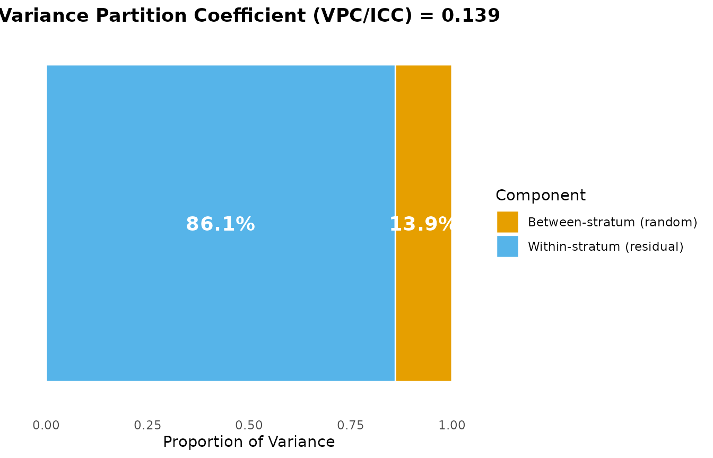
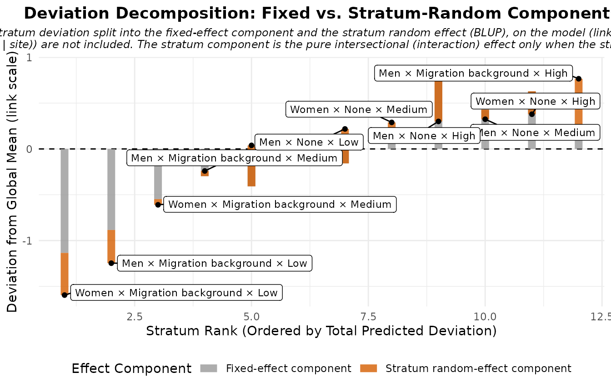
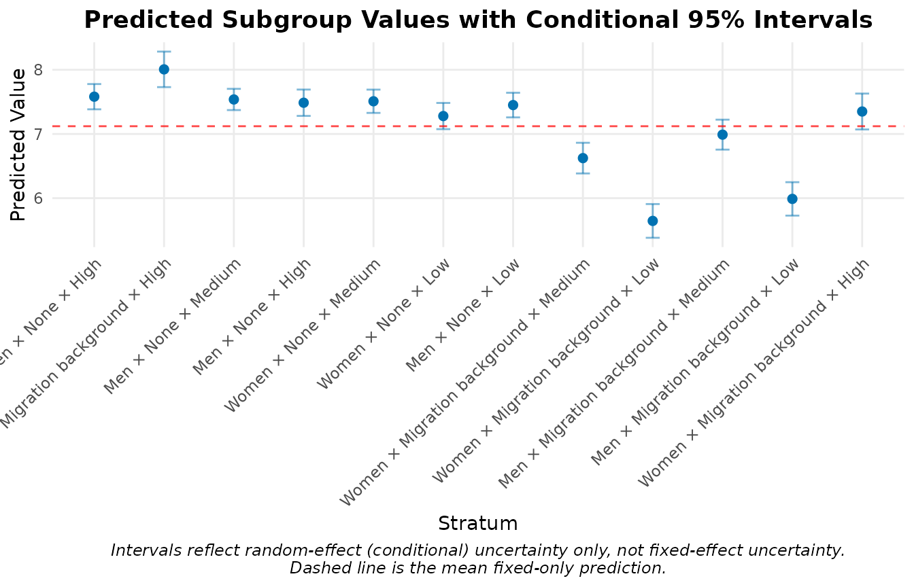
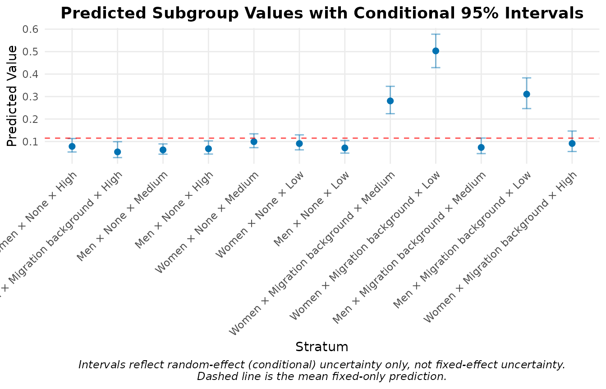
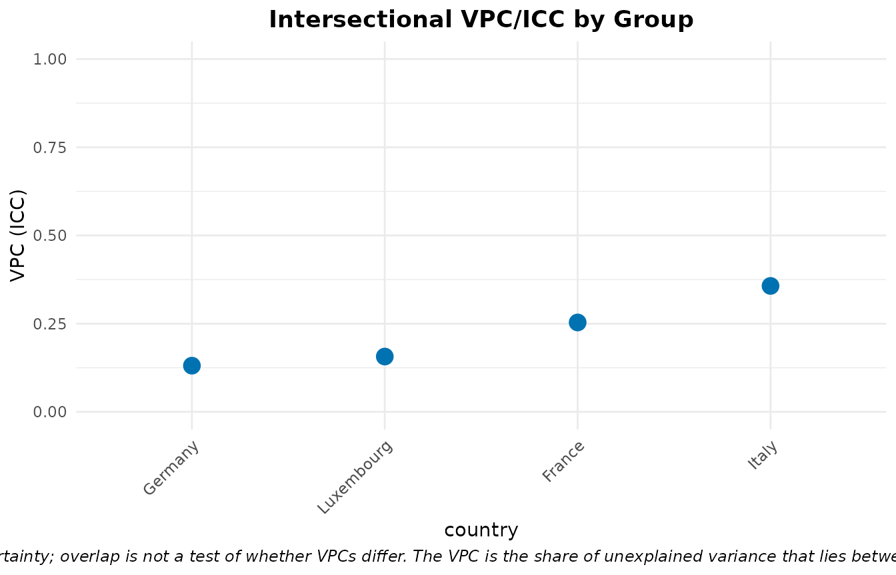
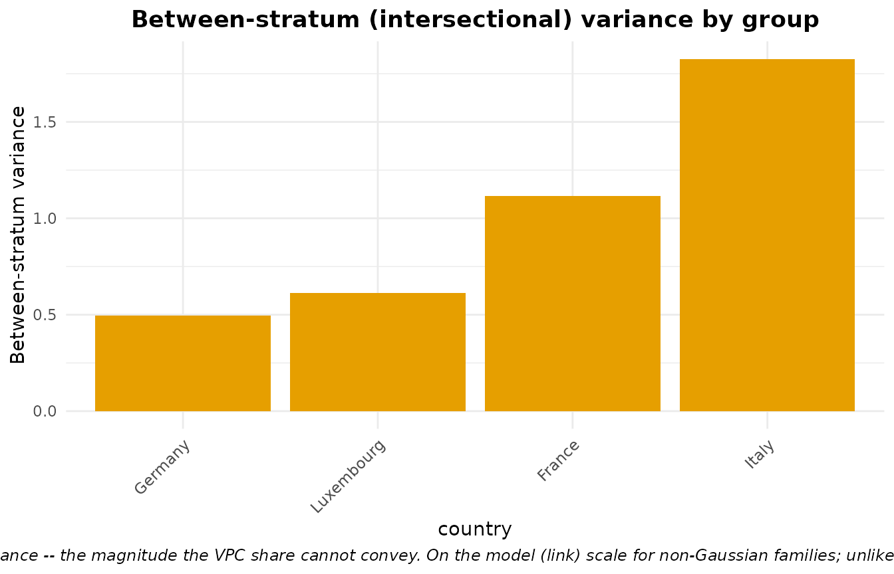

Youth MAIHDA: NEET and well-being across Europe
Hamid Bulut
2026-06-15
Source:vignettes/youth_maihda.Rmd
youth_maihda.RmdWhy MAIHDA for youth research?
Youth-research institutes – the German Youth Institute (DJI), the Youth & Work programme and the Observatoire de la jeunesse in Luxembourg – ask, again and again, the same two questions about young people’s life chances:
- the school-to-work transition: who ends up NEET (Not in Employment, Education or Training), the headline indicator of a stalled transition; and
- subjective well-being: how good young people feel their lives are.
And they ask these questions intersectionally. A young woman
with a migration background whose parents have little formal education
is not simply “a woman” plus “a migrant” plus “low social origin”: the
disadvantages can compound in ways that looking at one
axis at a time will miss. That is exactly what MAIHDA is built for – it
places every young person in an intersectional stratum
(here gender x migration x parental education) and asks how
much of the inequality in an outcome lies between those strata,
and how much of that is the simple additive sum of the parts versus a
genuine intersectional interaction.
This vignette walks through the full MAIHDA toolkit on a youth dataset:
- the two-model decomposition (VPC/ICC and PCV) for a continuous outcome (well-being),
- the discriminatory-accuracy workflow for a binary outcome (NEET),
- comparing intersectional inequality across countries, and
- pinpointing which intersections carry a genuine interaction.
The data
maihda_youth_data is a simulated cross-section of
16–29-year-olds in four countries. It is synthetic –
the real surveys it is modelled on (the Youth Survey Luxembourg, the
DJI’s AID:A, and the youth sub-sample of the European Social Survey)
require data-use agreements and cannot be shipped in a package – but its
design and its NEET / life-satisfaction levels are calibrated to
Eurostat figures for young Europeans, so the workflow below mirrors a
real analysis.
Teaching data. The values are constructed, not observed; read the patterns below as an illustration of the method, not as findings about these countries.
library(MAIHDA)
data("maihda_youth_data")
str(maihda_youth_data)
#> 'data.frame': 3000 obs. of 8 variables:
#> $ id : chr "Y0001" "Y0002" "Y0003" "Y0004" ...
#> $ country : Factor w/ 4 levels "Luxembourg","Germany",..: 1 1 1 1 1 1 1 1 1 1 ...
#> $ gender : Factor w/ 2 levels "Women","Men": 1 1 2 2 1 2 2 1 2 1 ...
#> $ migration : Factor w/ 2 levels "None","Migration background": 1 1 2 1 1 1 1 1 2 1 ...
#> $ parental_edu: Factor w/ 3 levels "Low","Medium",..: 3 3 3 2 3 2 3 2 3 3 ...
#> $ age : int 26 18 24 21 21 20 19 22 17 24 ...
#> $ neet : Factor w/ 2 levels "No","Yes": 1 1 1 1 1 1 1 1 1 2 ...
#> $ wellbeing : num 4.5 9.25 9.33 9.36 7.54 ...
#> - attr(*, "truth")=List of 12
#> ..$ target_interaction_share: num 0.33
#> ..$ dimensions : chr [1:3] "gender" "migration" "parental_edu"
#> ..$ n_strata : int 12
#> ..$ additive_main_effects :List of 3
#> .. ..$ gender : Named num [1:2] 0.3 -0.3
#> .. .. ..- attr(*, "names")= chr [1:2] "Women" "Men"
#> .. ..$ migration : Named num [1:2] -0.5 0.5
#> .. .. ..- attr(*, "names")= chr [1:2] "None" "Migration background"
#> .. ..$ parental_edu: Named num [1:3] 0.8 0 -0.8
#> .. .. ..- attr(*, "names")= chr [1:3] "Low" "Medium" "High"
#> ..$ interaction_form : chr "migration x social-origin + gender x migration (orthogonal to the main effects); compounding disadvantage conce"| __truncated__
#> ..$ interaction_by_stratum : Named num [1:12] -1.43 -0.77 1.43 0.77 -0.33 ...
#> .. ..- attr(*, "names")= chr [1:12] "Women:None:Low" "Men:None:Low" "Women:Migration background:Low" "Men:Migration background:Low" ...
#> ..$ gaussian :List of 4
#> .. ..$ between_var : num 0.5
#> .. ..$ residual_var : num 3.24
#> .. ..$ interaction_share: num 0.33
#> .. ..$ vpc : num 0.134
#> ..$ binary_latent :List of 4
#> .. ..$ between_var : num 1
#> .. ..$ residual_var : num 3.29
#> .. ..$ interaction_share: num 0.33
#> .. ..$ vpc : num 0.233
#> ..$ country_amplitude : Named num [1:4] 0.8 0.9 1.1 1.4
#> .. ..- attr(*, "names")= chr [1:4] "Luxembourg" "Germany" "France" "Italy"
#> ..$ neet_prevalence_target : Named num [1:4] 0.07 0.09 0.13 0.19
#> .. ..- attr(*, "names")= chr [1:4] "Luxembourg" "Germany" "France" "Italy"
#> ..$ wellbeing_mean_target : Named num [1:4] 7.4 7.3 7 6.8
#> .. ..- attr(*, "names")= chr [1:4] "Luxembourg" "Germany" "France" "Italy"
#> ..$ note : chr "VPCs above are at amplitude 1; the per-country between-stratum variance is amp^2 x the value shown, so the VPC "| __truncated__The three stratum dimensions form 2 x 2 x 3 = 12
intersectional strata; country is a higher-level grouping
variable. Every stratum is well populated (this is not a sparse-cell
problem – see vignette("bayesian_sparse_maihda") for that
case):
# the 12 intersectional strata and their sizes (pooled across countries)
table(maihda_youth_data$gender,
maihda_youth_data$migration,
maihda_youth_data$parental_edu)
#> , , = Low
#>
#>
#> None Migration background
#> Women 279 166
#> Men 317 169
#>
#> , , = Medium
#>
#>
#> None Migration background
#> Women 355 202
#> Men 428 212
#>
#> , , = High
#>
#>
#> None Migration background
#> Women 301 146
#> Men 276 149
# NEET prevalence differs across countries, as in the real Eurostat series
round(tapply(maihda_youth_data$neet == "Yes", maihda_youth_data$country, mean), 3)
#> Luxembourg Germany France Italy
#> 0.080 0.104 0.141 0.184Well-being: the two-model decomposition
maihda() runs the standard pipeline in one call. Writing
the stratum dimensions’ main effects in the formula tells
maihda() they are the adjusted model; it
derives the null model (the intersectional random
intercept alone) by dropping them, fits both on the same sample, and
reports the VPC/ICC and the PCV.
wb <- maihda(
wellbeing ~ gender + migration + parental_edu +
(1 | gender:migration:parental_edu),
data = maihda_youth_data
)
wb
#> MAIHDA Analysis
#> ===============
#>
#> Null formula: wellbeing ~ (1 | stratum)
#> Adjusted formula:wellbeing ~ gender + migration + parental_edu + (1 | stratum)
#> Engine: lme4 | Family: gaussian
#> VPC/ICC (null): 0.1394
#> PCV (null -> adjusted): 0.7192
#> Between-stratum variance: 0.4576 (null) -> 0.1285 (adjusted)
#> ~71.9% of the between-stratum variance is additive (the dimensions' main
#> effects); the remainder is the between-stratum variance remaining after the
#> additive main effects -- a model-dependent quantity
#> Strata: 12
#>
#> Use summary() for variance components and plot(type = ...) for figures.The VPC/ICC is the share of well-being variation that lies between the intersectional strata. The PCV (proportional change in variance) is how much of that between-stratum variance the additive main effects account for: a high PCV means inequality is largely the additive sum of gender, migration, and social origin; the remainder is the part the additive model cannot reach – the candidate intersectional signal. (As always, the PCV is a model-dependent variance change, not a causal decomposition.)
summary(wb)
#> MAIHDA Model Summary
#> ====================
#>
#> Variance Partition Coefficient (VPC/ICC):
#> Estimate: 0.1394
#>
#> Variance Components:
#> component variance sd proportion
#> Between-stratum (random) 0.501 0.7078 0.1394
#> Within-stratum (residual) 3.092 1.7585 0.8606
#> Total 3.593 1.8956 1.0000
#>
#> Fixed Effects:
#> term estimate
#> (Intercept) 7.121
#>
#> Stratum Estimates (first 10):
#> stratum stratum_id label random_effect se
#> 1 1 Women × None × High 0.4602 0.10033
#> 2 2 Men × Migration background × High 0.8858 0.14117
#> 3 3 Men × None × Medium 0.4169 0.08439
#> 4 4 Men × None × High 0.3660 0.10468
#> 5 5 Women × None × Medium 0.3888 0.09253
#> 6 6 Women × None × Low 0.1585 0.10413
#> 7 7 Men × None × Low 0.3295 0.09782
#> 8 8 Women × Migration background × Medium -0.4967 0.12188
#> 9 9 Women × Migration background × Low -1.4751 0.13402
#> 10 10 Men × Migration background × Medium -0.1311 0.11905
#> lower_95 upper_95
#> 0.26356 0.6569
#> 0.60916 1.1625
#> 0.25149 0.5823
#> 0.16080 0.5712
#> 0.20749 0.5702
#> -0.04564 0.3626
#> 0.13777 0.5212
#> -0.73561 -0.2578
#> -1.73773 -1.2124
#> -0.36448 0.1022
#> ... and 2 more strata
wb$pcv
#> Proportional Change in Variance (PCV)
#> =====================================
#>
#> PCV: 0.7192
#>
#> Between-stratum variance:
#> Model 1: 0.457550
#> Model 2: 0.128477
#> Change: 0.329073 (71.92%)
#>
#> Interpretation (PCV is the proportional change in between-stratum
#> variance between the models; it is variance 'explained' only when Model 2
#> nests Model 1 by adding predictors on the same outcome, sample and strata):
#> Between-stratum variance is 71.9% lower in Model 2 than in Model 1.plot() sends each view to the model it belongs on
automatically – the VPC and shrinkage views to the null model, the
additive-vs-intersectional views to the adjusted model.
plot(wb, type = "vpc") # variance partition (null model)
plot(wb, type = "effect_decomp") # additive vs intersectional (adjusted model)
plot(wb, type = "predicted") # predicted well-being per stratum, with 95% CIs
The predicted-value plot ranks the 12 strata: youth with a migration background and low parental education sit at the bottom, those without and with highly educated parents at the top – the additive gradient. The effect-decomposition plot is where the intersectional part becomes visible, separated from that additive gradient.
NEET: discriminatory accuracy
NEET is binary, so MAIHDA fits a multilevel logistic
model. maihda() auto-detects the two-level outcome (it
reports how it recoded the factor); passing
family = "binomial" makes it explicit. For a binary outcome
the discriminatory accuracy – the AUC / C-statistic and
the Median Odds Ratio (MOR) – rides along on the summary
automatically.
neet <- maihda(
neet ~ gender + migration + parental_edu +
(1 | gender:migration:parental_edu),
data = maihda_youth_data, family = "binomial"
)
#> Binary outcome 'neet' recoded to 0/1: 'No' = 0 (reference), 'Yes' = 1 (modeled event). Set the factor levels (or supply a 0/1 outcome) to control which level is the event.
neet
#> MAIHDA Analysis
#> ===============
#>
#> Null formula: neet ~ (1 | stratum)
#> Adjusted formula:neet ~ gender + migration + parental_edu + (1 | stratum)
#> Engine: lme4 | Family: binomial
#> VPC/ICC (null): 0.2033
#> PCV (null -> adjusted): 0.7464
#> Between-stratum variance: 0.8396 (null) -> 0.2129 (adjusted)
#> ~74.6% of the between-stratum variance is additive (the dimensions' main
#> effects); the remainder is the between-stratum variance remaining after the
#> additive main effects -- a model-dependent quantity
#>
#> Discriminatory accuracy (null model):
#> AUC: 0.727 | MOR: 2.397 | cases/controls: 382/2618
#> Adjusted-model AUC: 0.723
#> Strata: 12
#>
#> Use summary() for variance components and plot(type = ...) for figures.Two numbers tell complementary stories. The VPC says a substantial share of the (latent) variation in NEET risk lies between intersectional strata. The AUC, by contrast, asks a prediction question: given only which intersectional stratum a young person belongs to, how well can we separate those who are NEET from those who are not? Here the AUC is moderate – and that is the central, cautionary message of the “DA” in MAIHDA: a real between-stratum gradient still translates into only limited accuracy at the individual level, so intersectional strata describe structure far better than they target individuals. You can pull the pieces out directly:
maihda_discriminatory_accuracy(neet$model) # strata-only (null) model: Merlo's DA
#> Discriminatory accuracy (binomial MAIHDA)
#> AUC (C-statistic): 0.727
#> Median Odds Ratio: 2.397
#> Cases / controls: 382 / 2618The VPC for a logistic model is on the latent scale
(the level-1 variance is fixed at pi^2/3); see
vignette("binary_outcomes") for the full treatment,
including the probability-scale complement
maihda_vpc_response().
plot(neet, type = "predicted") # predicted NEET probability per stratum
Comparing inequality across countries
Add group = "country" and maihda() runs the
whole decomposition within each country as well, so we can ask
the contextual question youth institutes care about: is
intersectional inequality sharper in some countries than
others?
by_country <- maihda(
neet ~ gender + migration + parental_edu +
(1 | gender:migration:parental_edu),
data = maihda_youth_data, group = "country", family = "binomial"
)
group_results <- as.data.frame(by_country$groups)
group_results[order(group_results$vpc, decreasing = TRUE),
c("group", "n", "n_strata", "vpc", "var_between", "pcv", "status")]
#> group n n_strata vpc var_between pcv status
#> 3 Italy 750 12 0.3569970 1.8265435 0.8310519 ok
#> 1 France 750 12 0.2534557 1.1169275 0.9057089 ok
#> 4 Luxembourg 750 12 0.1568306 0.6119198 0.9337926 ok
#> 2 Germany 750 12 0.1309634 0.4957817 0.6343534 ok
plot(by_country, type = "group_vpc")
The VPC/ICC is a share, so a country can post a high VPC partly because its residual variation is small. Read it alongside the absolute between-stratum variance, which is the magnitude of intersectional inequality rather than its share:
plot(by_country, type = "group_between_variance")
Which intersections actually interact?
A high PCV says most inequality is additive – but some is
not. maihda_interactions() reads each stratum’s interaction
effect (its departure from the additive prediction, the random effect of
the adjusted model) and flags those credibly different from zero. With
many strata, screen with an FDR correction:
flagged <- maihda_interactions(wb, adjust = "BH")
flagged
#> Strata with credibly non-zero intersectional interaction
#> ========================================================
#>
#> 7 of 12 strata flagged (95% interval; BH-adjusted p-values).
#> Model: adjusted (two-model); interaction on the link (latent) scale.
#>
#> stratum label n interaction se lower
#> 2 Men × Migration background × High 149 0.6134 0.13803 0.3428
#> 4 Men × None × High 276 -0.5787 0.10338 -0.7813
#> 9 Women × Migration background × Low 166 -0.4604 0.13132 -0.7178
#> 6 Women × None × Low 279 0.4468 0.10285 0.2453
#> 7 Men × None × Low 317 0.3761 0.09676 0.1864
#> 11 Men × Migration background × Low 169 -0.3625 0.13024 -0.6178
#> 1 Women × None × High 301 -0.2498 0.09919 -0.4442
#> upper p_value p_adjusted flagged direction
#> 0.88389 8.839e-06 5.303e-05 TRUE above
#> -0.37606 2.176e-08 2.611e-07 TRUE below
#> -0.20302 4.550e-04 1.092e-03 TRUE below
#> 0.64843 1.396e-05 5.585e-05 TRUE above
#> 0.56571 1.016e-04 3.047e-04 TRUE above
#> -0.10725 5.378e-03 1.076e-02 TRUE below
#> -0.05542 1.178e-02 2.019e-02 TRUE below
#>
#> Interaction BLUPs are shrunken (partially pooled) estimates; treat flags as
#> exploratory. See ?maihda_interactions.The flagged strata are not scattered at random: they are the
migration x social origin cells. This is what an
intersectional interaction is – the effect of one dimension
depends on another. Here the social-origin gradient in
well-being is steeper among youth with a migration
background: low parental education carries an extra penalty
when combined with a migration background, beyond what either factor
predicts on its own. Equivalently, the additive model
over-credits high parental education for youth without a
migration background. That dependence – not a single “worst-off” cell –
is the intersectional finding, and it is exactly the kind of compounding
disadvantage the additive main effects cannot represent.
What an interaction can and cannot look like. A genuine interaction (one that survives adjustment for the main effects) is orthogonal to them, so it always moves cells in a symmetric pattern – “the doubly-disadvantaged get worse and the doubly-advantaged get better” is the signature of an additive effect, which the main effects already absorb. Read the flagged strata as where the additive model mis-predicts, and in which direction.
Reading this for youth policy
Put together, the workflow gives a youth-policy reader four distinct things:
- VPC/ICC – how segregated outcomes are across intersectional groups (a structural-inequality summary);
- PCV – how much of that is the simple additive sum of the axes versus genuine intersectionality (whether single-axis policies would suffice);
- discriminatory accuracy – whether intersectional membership is sharp enough to target individuals, or only to describe groups (a caution against profiling);
- the group comparison – where intersectional inequality is most acute, to prioritise contexts.
For the modelling extensions most relevant to youth data – survey
weights (sampling_weights=), youth nested in schools or
regions (context=), panel / growth-curve designs
(vignette("longitudinal")), and small intersectional cells
(vignette("bayesian_sparse_maihda")) – see the linked
workflows.
References
Merlo, J. (2018). Multilevel analysis of individual heterogeneity and discriminatory accuracy (MAIHDA) within an intersectional framework. Social Science & Medicine, 203, 74-80.
Evans, C. R., Williams, D. R., Onnela, J. P., & Subramanian, S. V. (2018). A multilevel approach to modeling health inequalities at the intersection of multiple social identities. Social Science & Medicine, 203, 64-73.
Merlo, J., Wagner, P., Ghith, N., & Leckie, G. (2016). An original stepwise multilevel logistic regression analysis of discriminatory accuracy: the case of neighbourhoods and health. PLOS ONE, 11(4), e0153778.
Crenshaw, K. (1989). Demarginalizing the intersection of race and sex. University of Chicago Legal Forum, 1989(1), 139-167.